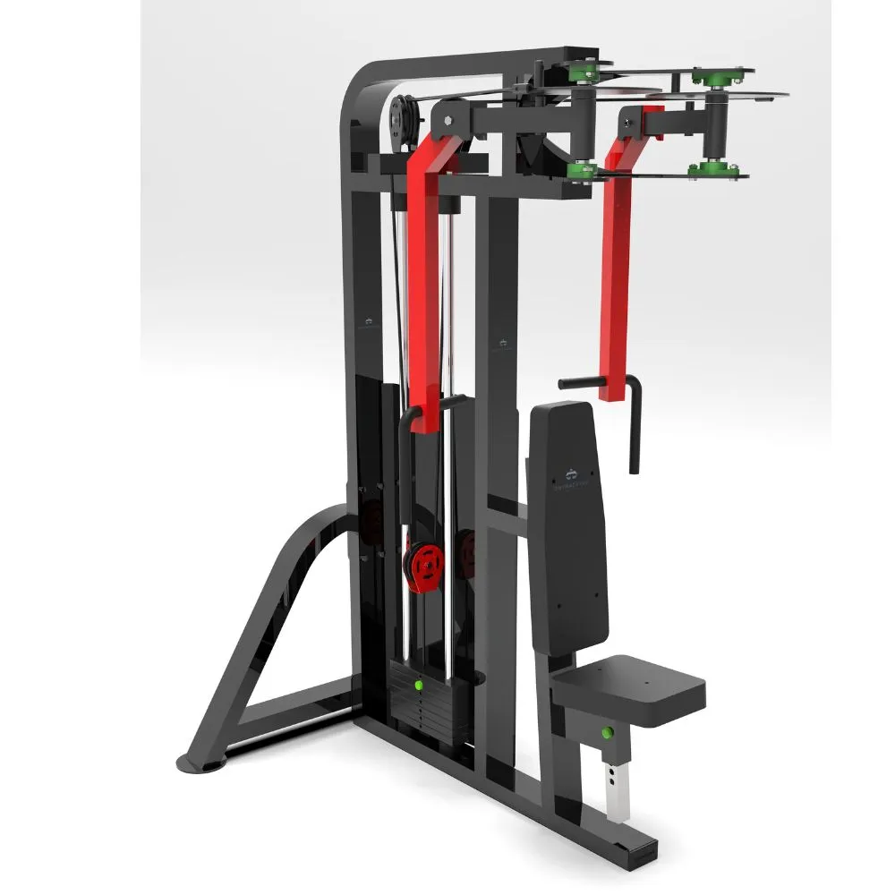

PEC DECK MACHINE

Pec deck machine adalah alat gym yang memiliki dua pegangan tangan di sebelah kanan dan kiri serta bangku untuk duduk. Alat ini berfungsi untuk membentuk otot dada dan bahu agar ideal.
Cara menggunakan pec deck machine adalah dengan duduk di bangku memunggungi alat, lalu kedua tangan memegang kedua pegangan kanan dan kiri. Lalu, kedua tangan melakukan gerakan terbuka dan tertutup.
Sumber: IDN Times